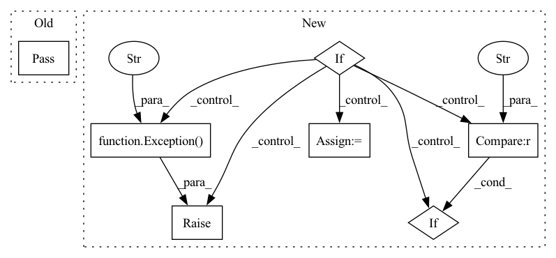

Pattern ID :41607

Before Change
class TrainOneStepWithGradientClipping(object):
def __init__(self):
pass
def __call__(self, data, label):
pass
After Change
class TrainOneStepWithGradientClipping(object):
def __init__(self, net_with_loss, optimizer, train_weights, gradient_clipping=tlx.ops.ClipByGlobalNorm(0.1)):
if gradient_clipping is None:
raise Exception("This method must input the gradient clipping function, eg tlx.ops.ClipByGlobalNorm(0.1).")
if tlx.BACKEND == "tensorflow":
self.net_weith_train = TrainOneStepWithGradientClippingTF(net_with_loss, optimizer, train_weights, gradient_clipping)
elif tlx.BACKEND == "paddle":
self.net_weith_train = TrainOneStepWithGradientClippingPD(net_with_loss, optimizer, train_weights, gradient_clipping)
elif tlx.BACKEND == "torch":
self.net_weith_train = TrainOneStepWithGradientClippingTH(net_with_loss, optimizer, train_weights, gradient_clipping)
In pattern: SUPERPATTERN
Frequency: 3
Non-data size: 7
Instances
Fragment ID: 116910167
Project Name: tensorlayer/tensorlayerx
Commit Name: af8396d394e14c142b86d940f600b1b65748de3e
Time: 2022-03-09
Author: laicheng_vip@163.com
File Name: tensorlayerx/model/core.py
M Class Name: TrainOneStepWithGradientClipping
N Class Name: TrainOneStepWithGradientClipping
M Method Name: __init__(5)
N Method Name: __init__(1)
M Parent Class: object
N Parent Class: object
M File Name: tensorlayerx/model/core.py
N File Name: tensorlayerx/model/core.py
M Start Line: 568
M End Line: 569
N Start Line: 569
N End Line: 582
'>
Before Change
def condition_on(self, other): pass
def relative_to(self, other): pass
def is_in(self, other): pass
def pad(self, left=0, right=0, top=0, bottom=0,
After Change
def relative_to(self, other):
if isinstance(other, Interval):
if other.axis == "x":
return self.shift([-other.start, 0])
else:
return self.shift([0, -other.start])
elif isinstance(other, Rectangle):
return self.shift([-other.x_1, -other.y_1])
elif isinstance(other, Quadrilateral):
transformed_points = _perspective_transformation(other.perspective_matrix,
self.points, is_inv=False)
return self.__class__(transformed_points, self.height, self.width)
else:
raise Exception(f"Invalid input type {other.__class__} for other")
def is_in(self, other, soft_margin={}, center=False):
other = other.pad(**soft_margin)
'>
Fragment ID: 116910166
Project Name: layout-parser/layout-parser
Commit Name: e24d5d30065f34fed405457ff672f43c5eb57032
Time: 2020-06-14
Author: 22512825+lolipopshock@users.noreply.github.com
File Name: src/layoutparser/elements.py
M Class Name: Quadrilateral
N Class Name: Quadrilateral
M Method Name: relative_to(2)
N Method Name: relative_to(2)
M Parent Class: BaseLayoutElement
N Parent Class: BaseLayoutElement
M File Name: src/layoutparser/elements.py
N File Name: src/layoutparser/elements.py
M Start Line: 368
M End Line: 368
N Start Line: 575
N End Line: 595
'>
Before Change
_np.vectorize(y_map.get)(points_ordering[:,1])
]).T
def condition_on(self, other): pass
def relative_to(self, other): pass
def is_in(self, other): pass
After Change
def condition_on(self, other):
if isinstance(other, Interval):
if other.axis == "x":
return self.shift([other.start, 0])
else:
return self.shift([0, other.start])
elif isinstance(other, Rectangle):
return self.shift([other.x_1, other.y_1])
elif isinstance(other, Quadrilateral):
transformed_points = _perspective_transformation(other.perspective_matrix,
self.points, is_inv=True)
return self.__class__(transformed_points, self.height, self.width)
else:
raise Exception(f"Invalid input type {other.__class__} for other")
def relative_to(self, other):
if isinstance(other, Interval):
'>
Fragment ID: 116910165
Project Name: layout-parser/layout-parser
Commit Name: e24d5d30065f34fed405457ff672f43c5eb57032
Time: 2020-06-14
Author: 22512825+lolipopshock@users.noreply.github.com
File Name: src/layoutparser/elements.py
M Class Name: Quadrilateral
N Class Name: Quadrilateral
M Method Name: condition_on(2)
N Method Name: condition_on(2)
M Parent Class: BaseLayoutElement
N Parent Class: BaseLayoutElement
M File Name: src/layoutparser/elements.py
N File Name: src/layoutparser/elements.py
M Start Line: 366
M End Line: 366
N Start Line: 553
N End Line: 573